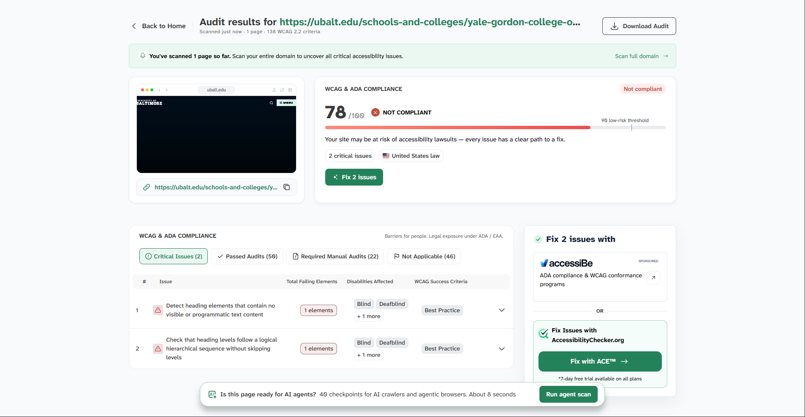

The website I will be evaluating is the school I am transfering to next year, which is the University
of Baltimore
The target audience of this website is people interested in the University of
Baltimore, more specifically, their simulation and game design major.
I would say the way this site is
organized, it's more linear than random.
One CRAP element I have observed is Proximity because looking at
the site, all relevant information pertaing to a specifc topic is grouped together.
ACcording tho the
accesibilty tracker the website was given a 78% with 2 elements that may cause issues with specific
disabilities.
The site definitely helps users complete tasks accurately and quickly with tabs and menus
to make the website user friendly.
I think one recommendation I would make is slightly changing the
layout to make some content more vsibile to the user.